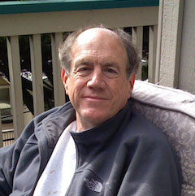

Keynote: Actors for CyberThings
Carl HewittCreator of Actor Model
Keynote: Actors for CyberThings
- coherent many-core (soon to be every-word-tagged) architectures, for which Actor concurrency is ideally suited.
- the Internet of Things, for which Actors are helpful in standardization.
- The Actor Model (which can be used to directly model all physically possible computation) is being increasingly used in industrial products, e.g., eBay, Microsoft, Twitter, etc.
- ActorScript (which is a particular very efficient and powerful programming system for implementing Actors) can be used to guide practical implementations in currently available programming environments, e.g., Erlang, Elixir, Java, C++, C#, JavaScript, Scala, etc.
- URL to articles on the following: the Actor Model, ActorScript, and Inconsistency Robustness
- URL to article on the following: how installing backdoors in the Internet of Things assists cyberterrorists
Video
About Carl